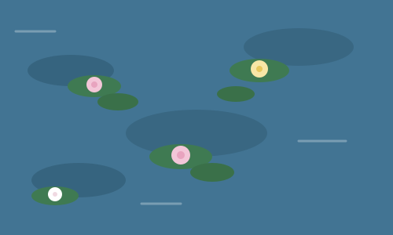

About the Artist

Claude Monet (1840–1926) was a French painter and one of the founders of Impressionism, an art movement known for capturing light, color, and fleeting moments rather than precise detail.
In 1883, Monet moved to the village of Giverny, France, where he spent decades designing and tending an elaborate flower garden with a large pond. That pond — and the water lilies floating on it — became the obsession of the rest of his life.
The Water Lilies Series
Starting in the late 1890s, Monet began painting his water lily pond over and over again, in different light and different seasons. By the time he died in 1926, he had created around 250 water lily paintings, making it one of the largest painting series by a single artist in history.
Many of these paintings were made while Monet was losing his eyesight to cataracts — which some art historians believe influenced the bold, hazy colors of his later work.
Where to See Them
Monet's water lily paintings are now scattered across major museums around the world. Here are a few:
| Museum | City |
|---|---|
| Musée de l'Orangerie | Paris, France |
| Musée Marmottan Monet | Paris, France |
| Museum of Modern Art (MoMA) | New York, USA |
| Metropolitan Museum of Art | New York, USA |
| Art Institute of Chicago | Chicago, USA |
Fun Facts
- Monet designed and planted his own water garden at Giverny — he was as passionate about gardening as he was about painting.
- He painted roughly 250 water lily paintings over the last 30 years of his life.
- Monet first exhibited a group of 48 water lily paintings in 1909, and the show was a huge success.
- The Musée de l'Orangerie built two oval rooms specifically to display Monet's largest water lily murals, arranged the way he wanted them.
- Monet continued painting water lilies even as cataracts affected his eyesight late in life.
Learn More
Want to explore further? Check out these resources: